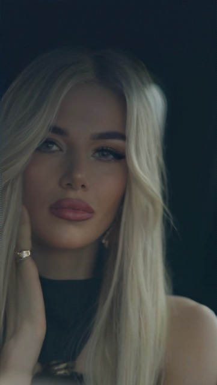
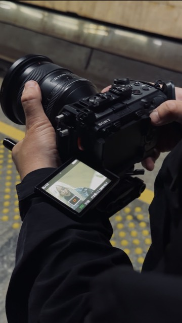
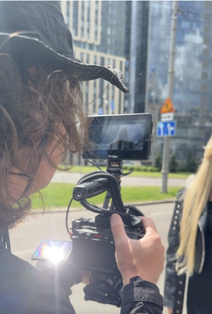
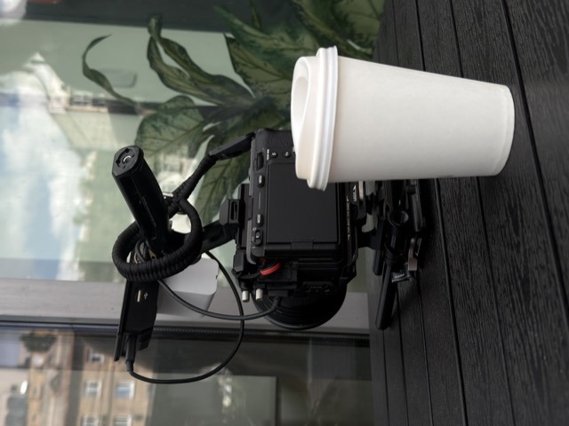
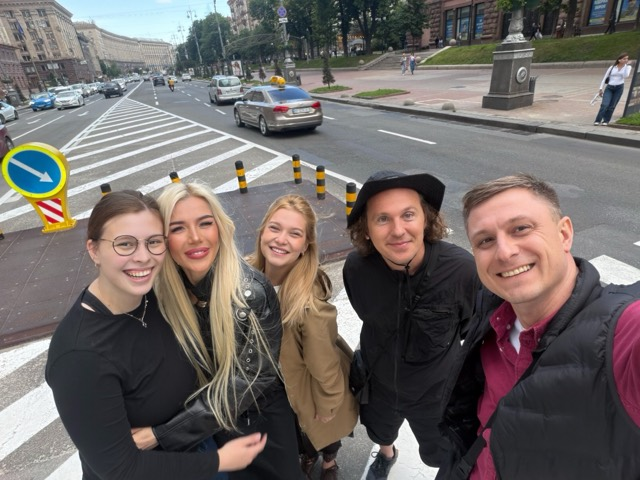

Чуттєва історія про ті моменти в стосунках, коли стає забагато шумних слів та гордості. Нагадування про те, як важливо вчасно зупинитися, відкинути образи та повернути справжню щирість. Найбільший реліз проєкту — з офіційним професійним кліпом, який знімався в Києві.
Головний реліз · 2026
Ідеальні вони
Чуттєва Pop / R&B історія про ті моменти в стосунках, коли стає забагато шумних слів та гордості. Нагадування про те, як важливо вчасно зупинитися, відкинути образи та повернути справжню щирість.
Дискографія
Власні пісні
Чесна відверта музика про справжні почуття. Попереду дуже багато нових пісень.

Особлива авторська балада, написана спеціально до мого весілля. Найінтимніша пісня в доробку — про те, що трапляється раз у житті.

Дебютний авторський сингл, що поклав початок сольному проєкту YUDYTSKA. Перший крок, з якого почалося все інше.
Знімальний процес
Як знімався кліп
Київ, знімальна група та кілька дуже довгих днів.




Живий звук
Ці пісні звучать краще наживо
Сольна програма або формат 2 в 1 із саксофоном на вашій події.